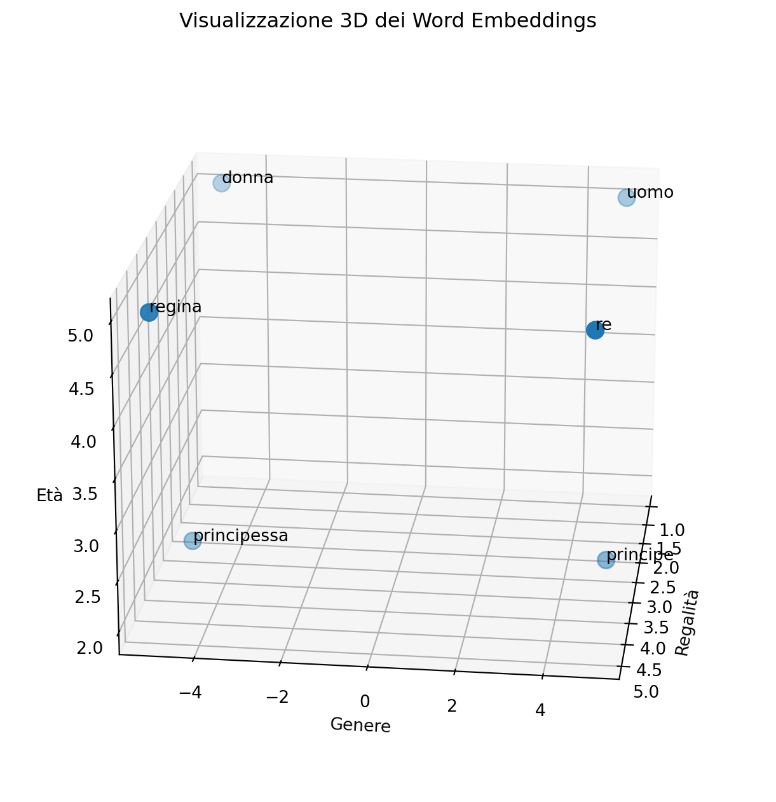

import matplotlib.pyplot as plt
from mpl_toolkits.mplot3d import Axes3D
import numpy as np
# Word embeddings semplificati
word_embeddings = {
"re": [5.0, 5.0, 5.0],
"regina": [5.0, -5.0, 5.0],
"principe": [3.0, 5.0, 2.0],
"principessa": [3.0, -5.0, 2.0],
"uomo": [1.0, 5.0, 5.0],
"donna": [1.0, -5.0, 5.0]
}
words = list(word_embeddings.keys())
embeddings = list(word_embeddings.values())
# Grafico 3D
fig = plt.figure(figsize=(12, 8))
ax = fig.add_subplot(111, projection='3d')
x = [emb[0] for emb in embeddings]
y = [emb[1] for emb in embeddings]
z = [emb[2] for emb in embeddings]
ax.scatter(x, y, z, s=100)
for i, word in enumerate(words):
ax.text(embeddings[i][0], embeddings[i][1], embeddings[i][2], word)
ax.set_xlabel('Regalità')
ax.set_ylabel('Genere')
ax.set_zlabel('Età')
ax.set_title('Visualizzazione 3D dei Word Embeddings')
ax.view_init(elev=20, azim=7)
plt.show()
# Distanza coseno
def distanza_coseno(vec1, vec2):
prodotto_scalare = np.dot(vec1, vec2)
norma_vec1 = np.linalg.norm(vec1)
norma_vec2 = np.linalg.norm(vec2)
return 1 - (prodotto_scalare / (norma_vec1 * norma_vec2))
# Matrice delle distanze
n_words = len(words)
matrice_distanze = [[0.0] * n_words for _ in range(n_words)]
for i in range(n_words):
for j in range(n_words):
matrice_distanze[i][j] = distanza_coseno(embeddings[i], embeddings[j])
# Visualizzazione
print("Matrice delle distanze coseno:")
print(" ", end="")
for word in words:
print(f"{word:>10}", end="")
print()
for i, word1 in enumerate(words):
print(f"{word1:10}", end="")
for j in range(n_words):
print(f"{matrice_distanze[i][j]:10.3f}", end="")
print()
# Calcolo di "regina"
def sottrai_vec(vec1, vec2):
return np.array(vec1) - np.array(vec2)
def somma_vec(vec1, vec2):
return np.array(vec1) + np.array(vec2)
print("Word embedding di regina:")
print(word_embeddings["regina"])
print("Word embedding calcolato: regina = re - uomo + donna")
print(somma_vec(sottrai_vec(word_embeddings["re"], word_embeddings["uomo"]), word_embeddings["donna"]))
Matrice delle distanze coseno:
re regina principeprincipessa uomo donna
re 0.000 0.667 0.063 1.000 0.111 0.919
regina 0.667 0.000 1.000 0.063 0.919 0.111
principe 0.063 1.000 -0.000 1.316 0.137 1.273
principessa 1.000 0.063 1.316 -0.000 1.273 0.137
uomo 0.111 0.919 0.137 1.273 0.000 0.980
donna 0.919 0.111 1.273 0.137 0.980 0.000
Word embedding di regina:
[5.0, -5.0, 5.0]
Word embedding calcolato: regina = re - uomo + donna
[ 5. -5. 5.]